Object-Oriented Design & Patterns
Cay S. Horstmann
Chapter 4
Interfaces and Polymorphism
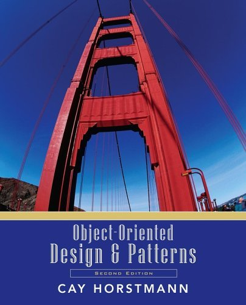
Chapter Topics
- Displaying an Image
- Polymorphism
- The Comparable Interface
- The Comparator Interface
- Anonymous Classes
- Frames and User Interface Components
- User Interface Actions
- Timers
- Drawing Shapes
- Designing an Interface
Displaying an Image
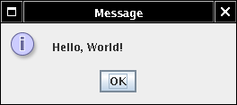
Displaying an Image
- Can specify arbitrary image file
JOptionPane.showMessageDialog(
null,
"Hello, World!",
"Message",
JOptionPane.INFORMATION_MESSAGE,
new ImageIcon("globe.gif"));
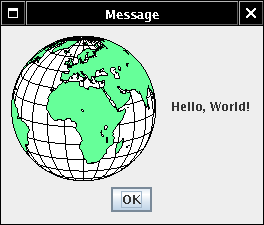
Displaying an Image
- What if we don't want to generate an image file?
- Fortunately, can use any class that implements Icon interface
type
- ImageIcon is one such class
- Easy to supply your own class
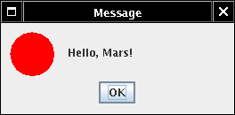
The Icon Interface Type
public interface Icon
{
int getIconWidth();
int getIconHeight();
void paintIcon(Component c, Graphics g, int x, int y);
}
Interface Types
The Icon Interface Type and Implementing Classes
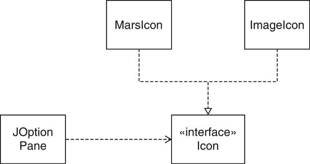
Polymorphism
Polymorphism
- showMessageDialog doesn't know which icon is
passed
- ImageIcon?
- MarsIcon?
- . . .?
- The actual type of anIcon is not Icon
- There are no objects of type Icon
- anIcon belongs to a class that implements Icon
- That class defines a getIconWidth method
A Variable of Interface Type
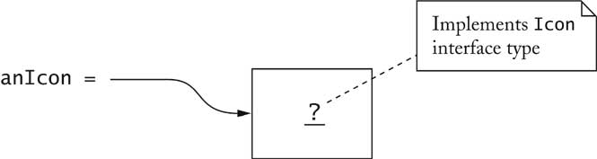
Polymorphism
Benefits of Polymorphism
- Loose coupling
- showMessageDialog decoupled from ImageIcon
- Doesn't need to know about image processing
- Extensibility
- Client can supply new icon types
The Comparable Interface Type
The Comparable Interface Type
- object1.compareTo(object2) returns
- Negative number if object1 less than object2
- 0 if objects identical
- Positive number if object1 greater than object2
- sort method compares and rearranges elements
if (object1.compareTo(object2) > 0) . . .
- String class implements Comparable<String>
interface type: lexicographic (dictionary) order
- Country class: compare countries by area
Ch4/sort1/Country.java
Ch4/sort1/CountrySortTester.java
The Comparator interface type
- How can we sort countries by name?
- Can't implement Comparable twice!
- Comparator interface type gives added flexibility
public interface Comparator<T>
{
int compare(T obj1, T obj2);
}
- Pass comparator object to sort:
Collections.sort(list, comp);
The Comparator interface type
Anonymous Classes
- No need to name objects that are used only once
Collections.sort(countries,
new CountryComparatorByName());
- No need to name classes that are used only once
Comparator<Country> comp = new
Comparator<Country>()
{
public int compare(Country country1, Country country2)
{
return country1.getName().compareTo(country2.getName());
}
};
Anonymous Classes
- anonymous new expression:
- defines anonymous class that implements Comparator
- defines compare method of that class
- constructs one object of that class
- Cryptic syntax for very useful feature
Anonymous Classes
Frames
Adding Components
User Interface Actions
User Interface Actions
- Add action code into actionPerformed method
- Gloss over routine code
helloButton.addActionListener(new
ActionListener()
{
public void actionPerformed(ActionEvent event)
{
textField.setText("Hello, World");
}
});
- When button is clicked, text field is set
Accessing Variables from Enclosing Scope
- Remarkable: Inner class can access variables from enclosing scope
e.g. textField
- Can access enclosing instance fields, local variables
- Local variables must be marked final
final JTextField textField = ...;
User Interface Actions
- Constructor attaches listener:
helloButton.addActionListener(listener);
- Button remembers all listeners
- When button clicked, button notifies listeners
listener.actionPerformed(event);
- Listener sets text of text field
textField.setText("Hello, World!");
Constructing Related Actions
- Write helper method that constructs objects
- Pass variable information as parameters
- Declare parameters final
public static ActionListener createGreetingButtonListener(
final String message)
{
return new
ActionListener()
{
public void actionPerformed(ActionEvent event)
{
textField.setText(message);
}
};
}
Timers
- Supply delay, action listener
ActionListener listener = ...;
final int DELAY = 1000; // 1000 millisec = 1 sec
Timer t = new Timer(DELAY, listener);
t.start();
- Action listener called when delay elapsed
- Ch4/timer/TimerTester.java
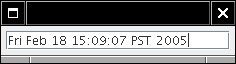
Drawing Shapes
- paintIcon method receives graphics context of
type Graphics
- Actually a Graphics2D object in modern Java versions
public void paintIcon(Component c, Graphics g, int x, int y)
{
Graphics2D g2 = (Graphics2D)g;
. . .
}
- Can draw any object that implements Shape interface
Shape s = . . .;
g2.draw(s);
Drawing Rectangles and Ellipses
- Rectangle2D.Double constructed with
- top left corner
- width
- height
- g2.draw(new Rectangle2D.Double(x, y, width, height));
- For Ellipse2D.Double, specify bounding box
Drawing Ellipses
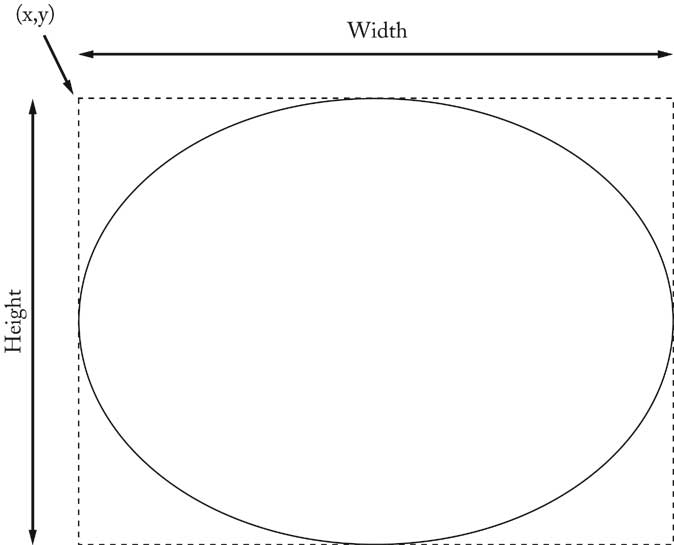
Drawing Line Segments
- Point2D.Double is a point in the plane
- Line2D.Double joins to points
Point2D.Double start = new Point2D.Double(x1, y1);
Point2D.Double end = new Point2D.Double(x2, y2);
Shape segment = new Line2D.Double(start, end);
g2.draw(segment);
Relationship Between Shape Classes
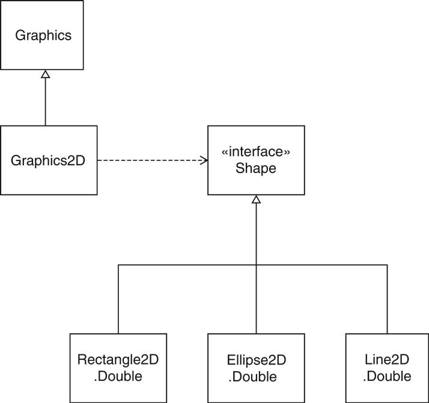
Drawing Text
- g2.drawString(text, x, y);
- x, y are base point coordinates
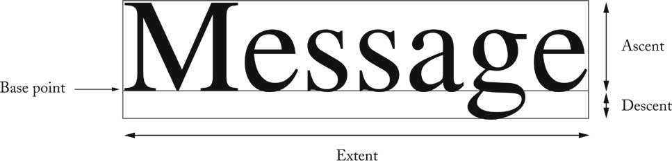
Filling Shapes
- Fill interior of shape
g2.fill(shape);
- Set color for fills or strokes:
g2.setColor(Color.red);
- Program that draws car
Ch4/icon3/CarIcon.java
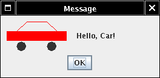
Defining a New Interface Type
- Use timer to move car shapes
- Draw car with CarShape
- Two responsibilities:
- Define new interface type MoveableShape
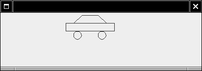
CRC Card for the MoveableShape Interface Type
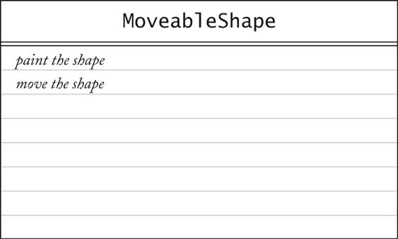
Defining a New Interface Type
- Name the methods to conform to standard library
- public interface MoveableShape
{
void draw(Graphics2D g2);
void translate(int dx, int dy);
}
- CarShape class implements MoveableShape
public class CarShape implements MoveableShape
{
public void translate(int dx, int dy)
{ x += dx; y += dy; }
. . .
}
Implementing the Animation
- Label contains icon that draws shape
- Timer action moves shape, calls repaint on label
- Label needs Icon, we have MoveableShape
- Supply ShapeIcon adapter class
- ShapeIcon.paintIcon calls MoveableShape.draw
Implementing the Animation
Implementing the Animation
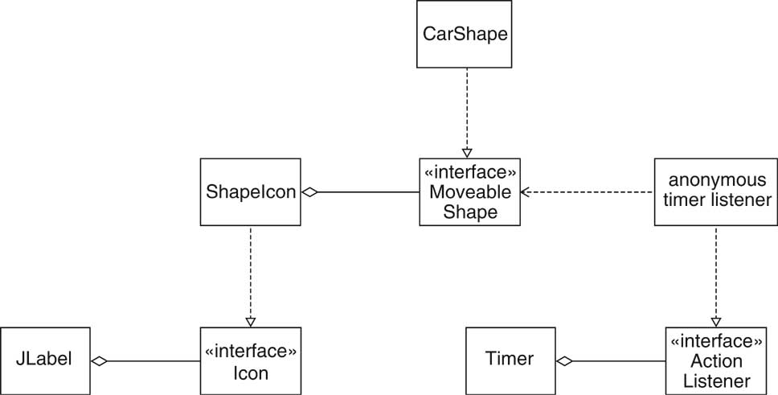